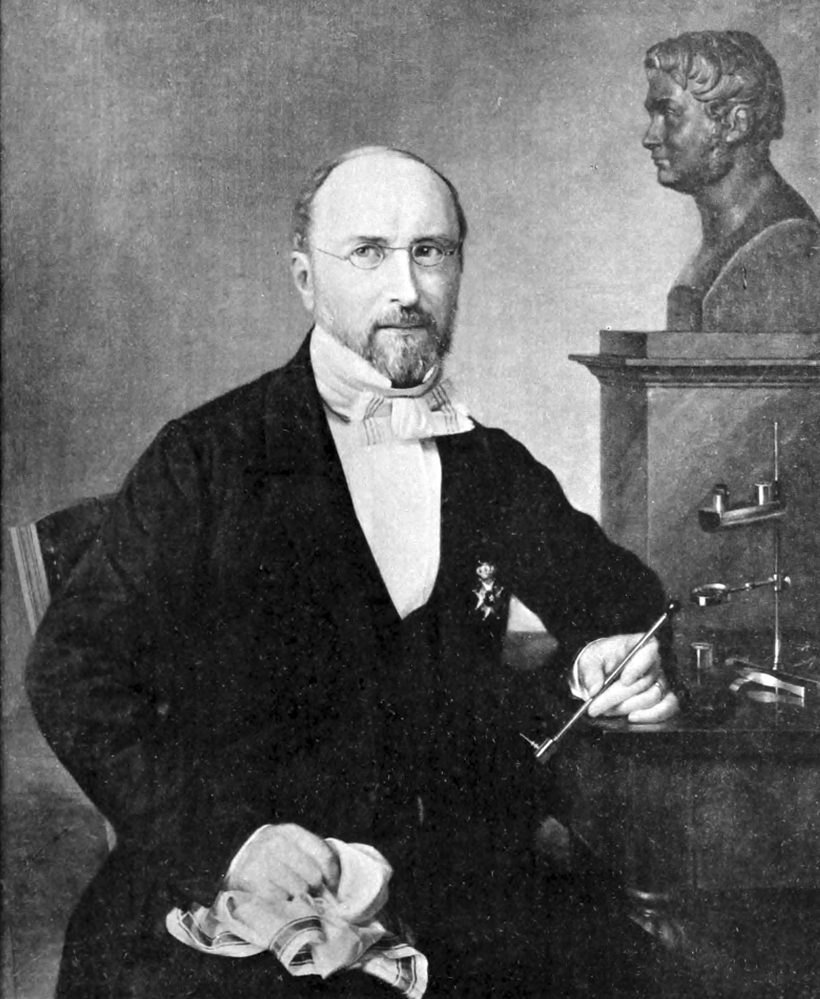

Carl Gustaf Mosander (10 settembre 1797 – 15 ottobre 1858)
E' stato un chimico e mineralogista svedese. Dopo aver frequentato le scuole a Kalmar, si trasferì a Stoccolma con la madre all'età di 12 anni, dove divenne apprendista presso la farmacia Ugglan. Ottenne la qualifica di farmacista nel 1817, ma il suo interesse si spostò verso la medicina, iscrivendosi al Karolinska Institutet nel 1820. Lavorò come insegnante di chimica presso l'Istituto e come assistente alla collezione di minerali del Museo svedese di storia naturale. Nel 1836 succedette a Jöns Jacob Berzelius come professore di chimica e farmacia al Karolinska Institutet. Le sue ricerche sull'ossido di ittrio lo portarono, nel 1843, a isolare gli ossidi di due nuovi elementi: l'erbio e il terbio. Nel 1833 fu eletto membro dell'Accademia reale svedese delle scienze. Il minerale mosandrite porta il suo nome in suo onore.
